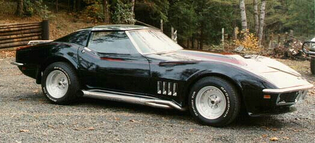

Chevy Corvette ZL-1

These a pics of a 1968 corvette which looks allot like the ZL-1
Only 2, ZL-1's were built so pics are hard to find
Specs (regular 427/ZL-1)
Price |
$6,392 / N/A(1969 dollars) |
Top Speed |
135mph / N/A |
Acceleration |
|
Engine |
|
0-30mph |
N/A |
Type |
V8, 16valve OVH / same |
0-60mph |
5.5sec / N/A |
Displacement |
7L (427cu)/ same |
0-100 |
N/A |
Power |
435hp@5600rpm / 550hp?@?rpm |
1/4 mile |
13.5sec/?mph / 11sec/?mph |
Torque |
460 lbs-ft@4000rpm / N/A |
Weight |
3,145 lbs / N/A |
Handling |
|
Gas mileage |
10mpg / N/A |
Skidpad |
N/A |
City |
N/A |
600ft slalom |
N/A |
Highway |
N/A |
Powertrain |
Front engined, rear wheel drive, 4 speed manual / same |
(? = incomplete data or unverified info, N/A = info Not Available)
Beyond the specs:
The fastest most powerful Chevrolet road car to ever be produced, faster than the Corvette ZR-1, this is the famed Corvette ZL-1. This is simply a 427 Corvette with all of the engine parts made out of aluminum instead of iron, the result was a more powerful engine than even the L88 Corvette (which had aluminum heads). The L88 was claimed to have 435hp but had somewhere closer to 530hp, just by looking at the relative performances it is obvious that the ZL-1 had at least 550hp (some claim as much as 585hp!). Unfortunately, only two of these prototype Corvettes were ever made, and only 116 L88s were made (the closest vehicle to the ZL-1).
~Oracle